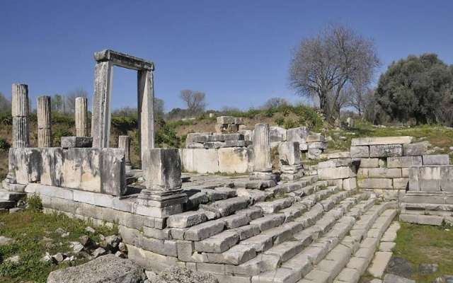

मुखपृष्ठ › प्रांत-दर-प्रांत घूमने की जगहें › मुग़ला
Kültür Varlıkları गाइड में मुग़ला की 48 जगहें हैं: 32 पुरातात्विक स्थल, 9 संग्रहालय, 2 झील, 2 ट्रेकिंग मार्ग, 1 राफ़्टिंग, 1 क़िला और ऐतिहासिक इमारत, 1 घाटी (कैन्यन)। नीचे मुख्य आकर्षण, नक्शा और पूरी सूची है।
⭐ मुख्य आकर्षण

1 · मुग़ला · पुरातात्विक स्थलक्नीडोस पुरातात्विक स्थल
दातचा प्रायद्वीप के सिरे पर, जहाँ एजियन भूमध्य सागर से मिलता है, स्थित क्नीडोस दो बंदरगाहों वाला एक डोरियाई नगर था। यह कला और विज्ञान के लिए प्रसिद्ध था: कहा जाता है कि…

2 · मुग़ला · पुरातात्विक स्थलअमिंतास चट्टानी क़ब्र
फ़ेतिये के केंद्र के ऊपर चट्टानों में काटी गई अमिंतास की क़ब्र लिकिया की सबसे प्रभावशाली चट्टानी क़ब्रों में से एक है। प्राचीन तेल्मेसोस की और ईसा पूर्व चौथी सदी की यह…

3 · मुग़ला · पुरातात्विक स्थलआमोस प्राचीन नगर
मारमारिस के तुरुंच के पास कुमलुबुक खाड़ी की ओर देखती पहाड़ी पर हेलेनिस्टिक कारियाई नगर। समुद्र-मुखी थिएटर, मंदिर और दीवारों के अवशेष; छोटा पर असाधारण दृश्य वाला।…
🗺 नक्शे पर
📍 सभी जगहें (48)
पुरातात्विक स्थल (32)
क्नीडोस पुरातात्विक स्थलपुरातात्विक स्थलअमिंतास चट्टानी क़ब्रपुरातात्विक स्थलआमोस प्राचीन नगरपुरातात्विक स्थल आरसादापुरातात्विक स्थल
आरसादापुरातात्विक स्थल बार्गिलियापुरातात्विक स्थल
बार्गिलियापुरातात्विक स्थल बोद्रुम प्राचीन रंगमंचपुरातात्विक स्थल
बोद्रुम प्राचीन रंगमंचपुरातात्विक स्थल फ़ेतिये गेमिलर द्वीपपुरातात्विक स्थल
फ़ेतिये गेमिलर द्वीपपुरातात्विक स्थल फ़ेतिये कायाकोयपुरातात्विक स्थल
फ़ेतिये कायाकोयपुरातात्विक स्थल फ़ेतिये लेटून पुरातात्विक स्थलपुरातात्विक स्थल
फ़ेतिये लेटून पुरातात्विक स्थलपुरातात्विक स्थल फ़ेतिये पिनारा पुरातात्विक स्थलपुरातात्विक स्थल
फ़ेतिये पिनारा पुरातात्विक स्थलपुरातात्विक स्थल त्लोस पुरातात्विक स्थल (फ़ेतिये)पुरातात्विक स्थल
त्लोस पुरातात्विक स्थल (फ़ेतिये)पुरातात्विक स्थल ग्युमुशकेसेन समाधिपुरातात्विक स्थल
ग्युमुशकेसेन समाधिपुरातात्विक स्थल लातमोस का हेराक्लेयापुरातात्विक स्थल
लातमोस का हेराक्लेयापुरातात्विक स्थल इआसोस पुरातात्विक स्थलपुरातात्विक स्थल
इआसोस पुरातात्विक स्थलपुरातात्विक स्थल कादियांदा प्राचीन नगरपुरातात्विक स्थल
कादियांदा प्राचीन नगरपुरातात्विक स्थल कौनोस पुरातात्विक स्थलपुरातात्विक स्थल
कौनोस पुरातात्विक स्थलपुरातात्विक स्थल केरामोस प्राचीन नगरपुरातात्विक स्थल
केरामोस प्राचीन नगरपुरातात्विक स्थल लाब्राउंडा पुरातात्विक स्थलपुरातात्विक स्थल
लाब्राउंडा पुरातात्विक स्थलपुरातात्विक स्थल
लागिना पुरातात्विक स्थलपुरातात्विक स्थल लोरीमा किलापुरातात्विक स्थल
लोरीमा किलापुरातात्विक स्थल मिलास बेचिन क़िला और पुरातात्विक स्थलपुरातात्विक स्थल
मिलास बेचिन क़िला और पुरातात्विक स्थलपुरातात्विक स्थल मिलास यूरोमोस पुरातात्विक स्थलपुरातात्विक स्थल
मिलास यूरोमोस पुरातात्विक स्थलपुरातात्विक स्थल हेकातोम्नोस समाधि (उज़ुनयुवा)पुरातात्विक स्थल
हेकातोम्नोस समाधि (उज़ुनयुवा)पुरातात्विक स्थल उज़ूनयुवा स्मारक-मकबरा और संग्रहालय परिसर (मिलास)पुरातात्विक स्थल
उज़ूनयुवा स्मारक-मकबरा और संग्रहालय परिसर (मिलास)पुरातात्विक स्थल मिंदोस प्राचीन नगरपुरातात्विक स्थल
मिंदोस प्राचीन नगरपुरातात्विक स्थल ओइनोआंदा प्राचीन नगरपुरातात्विक स्थल
ओइनोआंदा प्राचीन नगरपुरातात्विक स्थल पेदासा प्राचीन नगरपुरातात्विक स्थल
पेदासा प्राचीन नगरपुरातात्विक स्थल पिदनाईपुरातात्विक स्थल
पिदनाईपुरातात्विक स्थल सेदिर द्वीप (केद्रेआई)पुरातात्विक स्थल
सेदिर द्वीप (केद्रेआई)पुरातात्विक स्थल सिदिमा प्राचीन नगरपुरातात्विक स्थल
सिदिमा प्राचीन नगरपुरातात्विक स्थल स्ट्रातोनिकेइया पुरातात्विक स्थलपुरातात्विक स्थलहिल्लारिमापुरातात्विक स्थल
स्ट्रातोनिकेइया पुरातात्विक स्थलपुरातात्विक स्थलहिल्लारिमापुरातात्विक स्थलसंग्रहालय (9)
 बोद्रुम सेर्चे लिमानी काँच-पोत प्रदर्शनी हॉलसंग्रहालय
बोद्रुम सेर्चे लिमानी काँच-पोत प्रदर्शनी हॉलसंग्रहालय बोद्रुम जलगत पुरातत्व संग्रहालयसंग्रहालय
बोद्रुम जलगत पुरातत्व संग्रहालयसंग्रहालय फ़ेतिये संग्रहालयसंग्रहालय
फ़ेतिये संग्रहालयसंग्रहालय इआसोस मछली बाज़ार संग्रहालय (मिलास)संग्रहालय
इआसोस मछली बाज़ार संग्रहालय (मिलास)संग्रहालय बोद्रुम मौसोलियम स्मारक संग्रहालयसंग्रहालय
बोद्रुम मौसोलियम स्मारक संग्रहालयसंग्रहालय मुग्ला संग्रहालयसंग्रहालय
मुग्ला संग्रहालयसंग्रहालय ज़ेकी म्युरेन कला संग्रहालयसंग्रहालयमरमरिस संग्रहालयसंग्रहालयमिलास पत्थर-कृति संग्रहालयसंग्रहालय
ज़ेकी म्युरेन कला संग्रहालयसंग्रहालयमरमरिस संग्रहालयसंग्रहालयमिलास पत्थर-कृति संग्रहालयसंग्रहालय